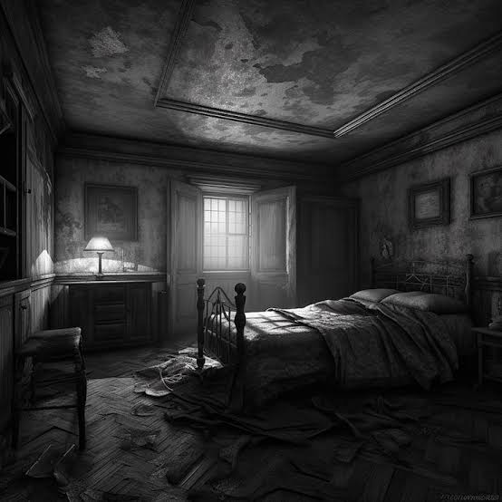
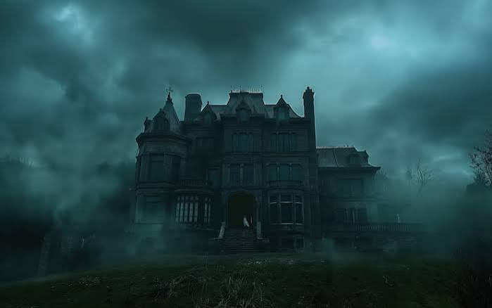

DESCRIPCIÓ DEL FENOMEN

L'expedient 001 recull una sèrie d'esdeveniments inexplicables registrats en una antiga habitació d'un edifici abandonat.
Durant diverses nits consecutives s'han registrat sons, moviments d'objectes i veus procedents d'una habitació que roman tancada i sense ocupants.
L'origen d'aquests esdeveniments continua sense determinar-se.
DADES DE L'EXPEDIENT
- Número d'expedient: 001.
- Localització: Edifici abandonat.
- Fenomen: Activitat paranormal inexplicable.
- Primera detecció: 14 d'octubre de 2025.
- Testimonis registrats: 4.
- Estat: Investigació oberta.
REGISTRE D'INVESTIGACIÓ
- [23:41] Inici de la investigació
- [00:13] Soroll detectat a l'HABITACIÓ 13
- [00:27] Moviment paranormal registrat
- [01:05] Segona detecció d'àudio
- [02:16] Investigació interrompuda
- [02:30] Expedient actualitzat
EVIDÈNCIES RECOPILADES
Material gràfic recopilat durant la investigació:



CLASSIFICACIÓ DEL CAS
Nivell de perillositat: ALT